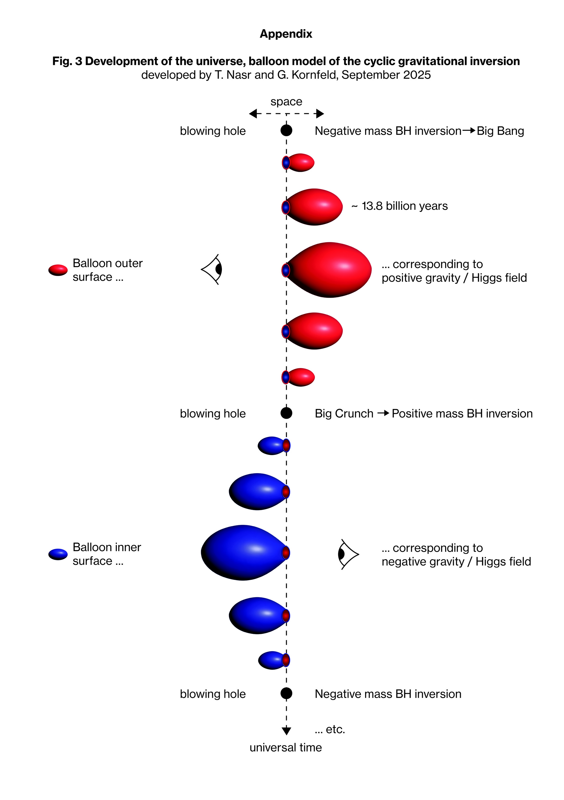

Vorbemerkung
Der Autor promovierte 1974 in Physik bei Prof. A. Seeger an der Universität Stuttgart über die Wechselwirkung zwischen Versetzungen und magnetischen Flusslinien in Typ-II-Supraleitern. Er ist heute Physiker im Ruhestand und war mehr als 34 Jahre in der Industrie tätig. Als Entwicklungsleiter für Wanderfeldröhren (TWTs) für die Weltraumkommunikation und Radaranwendungen sowie als Leiter der Geschäftsentwicklung analysierte er komplexe Fertigungsfehler und trieb neue Konzepte voran. In dieser Funktion erfand und entwickelte er mit seinem Team ein innovatives Ionentriebwerk mit magnetischem Cusp-Feld, genannt HEMPT, das inzwischen gemeinsam mit dem DLR auf dem deutschen H2-Satelliten für den Weltraumeinsatz qualifiziert wurde. Er ist kein Experte auf den hier angesprochenen Gebieten der Astronomie, Kosmologie, allgemeinen Relativitätstheorie, Teilchenphysik, Quantenfeldtheorie oder Mathematik, interessiert sich aber sehr für deren vielfach veröffentlichte Ergebnisse.
Als Außenseiter auf diesen Gebieten muss er spekulativ vorgehen. Er versucht jedoch, die unzähligen, oft widersprüchlichen Ergebnisse zu einem konsistenten Gesamtbild zu ordnen, um neue Ideen und fachübergreifendes Denken für eine nächste Generation von Fachleuten anzuregen. Daher ist dies keine typische wissenschaftliche Arbeit, die alle üblichen Standards, etwa bei Quellenangaben, erfüllt. Im Zeitalter der künstlichen Intelligenz können interessierte Leser diese Quellen leicht finden. Stattdessen möchte er aufgeschlossene Wissenschaftler dafür gewinnen, einige der hier vorgestellten neuen Grundideen zu einer künftigen physikalisch konsistenten Theorie der Quantengravitation weiterzuentwickeln.
Einleitung
Die hier vorgestellten Gedanken wurden ursprünglich durch D. S. Hajdukovics Hypothesen zur gravitativen Polarisation des Quantenvakuums angeregt. Diese erklären die übermäßig schnelle Bewegung äußerer Sterne in Galaxien und von Galaxien in Galaxienhaufen ohne dunkle Materie sowie die beschleunigte Expansion des Universums ohne dunkle Energie als lokale beziehungsweise globale Wirkungen eines gravitativ polarisierten Quantenvakuums.
Hajdukovics Hypothesen kommen somit ohne die hypothetischen physikalischen Größen dunkle Materie und dunkle Energie aus, die in der derzeit am weitesten anerkannten ΛCDM-Kosmologie verwendet werden.
Obwohl das ΛCDM-Modell viele beobachtbare Parameter des Universums recht erfolgreich erklärt, insbesondere die Eigenschaften der kosmischen Mikrowellenhintergrundstrahlung (CMB), fehlen ihm weiterhin vollständig ein experimenteller Nachweis von Teilchen der dunklen Materie und eine Erklärung der physikalischen Natur der dunklen Energie, die durch die kosmologische Konstante Λ dargestellt wird.
Nach Ansicht des Autors wird der unabhängige Parameter Λ in Einsteins allgemeiner Relativitätstheorie (GRT) fälschlicherweise dazu verwendet, die sogenannte Vakuumkatastrophe des Standardmodells (SM) der Teilchen und Quantenfelder zu beheben und auszugleichen. Dieses sagt eine Energiedichte der Quantenvakuumfluktuationen voraus, die um bis zu einen Faktor 10¹²¹ zu hoch ist, um mit der beobachteten, noch immer mäßigen Expansion des Universums übereinzustimmen.
Dieses schwerwiegende Problem lässt sich nach Ansicht des Autors wahrscheinlich nur innerhalb des SM lösen, wo es auch gelöst werden sollte: indem die Quantenvakuumfluktuationen von Teilchen und Antiteilchen, wie von Hajdukovic vorgeschlagen, als Gravitationsdipole mit einer Gesamtmasse von null angenommen werden.
Doch wie lässt sich diese Annahme ernsthaft rechtfertigen, nachdem Hajdukovics Ideen durch die Veröffentlichung der Ergebnisse des ALPHA-Experiments am CERN im Jahr 2023 an Glaubwürdigkeit verloren haben? Dabei wurde festgestellt, dass Antiwasserstoffatome im Gravitationsfeld der Erde nach unten fallen, genau wie gewöhnliche Materieteilchen. Dies zeigt, dass reale Antiwasserstoffatome eindeutig eine positive Masse besitzen.
Nichtuniverselle Quantenfluktuationen
Um an dieser Annahme festzuhalten, müssen wir einen Preis zahlen, und zwar, wie der Autor zugibt, einen sehr hohen, grundlegenden Preis. Dieser wurde innerhalb von Hajdukovics Theorie noch nicht berücksichtigt (D. S. Hajdukovic, 2024; arXiv:2311.02128), vom Autor aber bereits beim 25. BHWS-Workshop 2021 angesprochen:
Wir müssen die Vorstellung universeller virtueller Quantenfluktuationen aufgeben, die unabhängig von ihrer lokalen Umgebung sind. Stattdessen müssen wir annehmen, dass ihre gravitativen Eigenschaften von Wechselwirkungen mit anderen lokalen Teilchenfeldern abhängen, insbesondere von der Dichte der Higgs-Teilchenfluktuationen.
Einfach ausgedrückt betrachtet der Autor unterschiedliche Quantenfluktuationen im Vakuum und innerhalb der Volumina realer Materieteilchen. Für ihn ist dies ein durchaus logischer Gedanke: Warum sollten so unterschiedliche Medien wie Vakuum und Materie ihre virtuellen Quantenfluktuationen nicht beeinflussen? Nur der mathematischen Einfachheit halber?
Im Vakuum: Virtuelle Teilchen-Antiteilchen-Paare sind Gravitationsdipole mit entgegengesetzter Polarität und einer Gesamtmasse von null, aber mit einem verbleibenden gravitativen Dipolmoment. Während ihrer Existenz hängt die Orientierung dieser virtuellen Dipole von der resultierenden Stärke des Gravitationsfeldes aller anderen Massen an ihrem Ort ab; sie verstärken diese Gravitationsfelder lokal. So liefern sie dem Quantenvakuum global eine kleine positive Energiedichte, im Einklang mit dem beobachteten Expansionsparameter des Universums.
In Materie: Virtuelle Teilchen-Antiteilchen-Paare sind gravitativ polar und besitzen zwei positive Teilchenmassen. Dadurch erklären sich die Massen von Protonen, Neutronen und anderen Baryonen und Mesonen durch die Massen ihrer Valenzquarks und Seequark-Paare sowie die Bindungsenergie der Gluonen im Einklang mit dem SM.
Als Ursache dieses Unterschieds wird das universelle skalare Higgs-Feld in unserem gegenwärtigen Universum angenommen, das im Wechselwirkungsvolumen realer Teilchen oder Antiteilchen nur positive Masse zulässt. Die hohe lokale Dichte virtueller Higgs-Teilchen oder die Besonderheiten der Wechselwirkungen des Quanten-Gluonenfeldes in der lokalen Umgebung realer Teilchen oder Antiteilchen verleihen allen virtuellen Teilchenpaaren in dieser lokalen Umgebung ausschließlich positive träge und gravitative Masse beziehungsweise erzwingen diese.
Was gewinnen wir mit einer solchen „gewagten Hypothese“?
- Wir vermeiden die Vakuumkatastrophe und behalten gleichzeitig die positive Masse und Energie aller realen Teilchen und Antiteilchen bei, wie es Einsteins Äquivalenzprinzip verlangt.
- Im Gegensatz zur Materie befindet sich das Quantenvakuum in seinem niedrigstmöglichen energetischen Grundzustand. Ohne darin eingebettete Materie wäre es gravitativ neutral. Durch die Existenz eingebetteter Materie wird es jedoch polarisiert. Dadurch wirkt es der Gravitation global, insbesondere in den leeren Räumen (Voids) des Universums, als expandierende Antigravitationsquelle entgegen. In den Filamenten und Wänden von Galaxien und Galaxienhaufen erhöht es dagegen lokal die Gravitationsstärke und die Bindung zwischen und innerhalb von Galaxien und Galaxienhaufen.
- Eine extrem fein abgestimmte kosmologische Konstante Λ und die damit verbundene dunkle Energie sind nicht erforderlich. In Einsteins Feldgleichungen sollte Λ durch die zeit- und ortsabhängige gravitative Polarisationsenergiedichte des Quantenvakuums ersetzt werden, die selbstkonsistent von der eingebetteten, zeitlich und räumlich veränderlichen Materieverteilung abhängt.
- Teilchen der dunklen Materie und Halos aus dunkler Materie um Galaxien und Galaxienhaufen sind nicht erforderlich. Sie werden ebenfalls selbstkonsistent durch die lokale Verstärkung der Gravitationsfelder infolge der gravitativen Polarisationsdichten des Quantenvakuums um und innerhalb von Galaxien und Galaxienhaufen ersetzt.
Neue unterstützende astronomische Beobachtungen
Hajdukovic hat gezeigt, dass seine physikalischen Ideen zu einer mathematischen Ähnlichkeit mit der MOND-Theorie führen. Diese erklärt unmittelbar viele astronomische Beobachtungen, insbesondere die baryonische Tully-Fisher-Beziehung. Seine Vorhersage einer Abnahme der beschleunigten Expansion des Universums hat inzwischen Unterstützung durch die jüngsten Ergebnisse des DESI-Teams (Dark Energy Spectroscopic Instrument) in Arizona aus dem Jahr 2025 erhalten, bereits mit 4,3σ:

Abbildung 1 zeigt die DESI-Ergebnisse nach CERN Courier, März/April 2025.
Mit baryonischen akustischen Oszillationen (BAO) als Maßstab misst DESI einen Übergang von verzögerter zu beschleunigter Expansion des Universums vor etwa 7 Milliarden Jahren und eine Abnahme der beschleunigten Expansion seit etwa 3 Milliarden Jahren. Dies stimmt mit den Phasen 2 und 3 des von Hajdukovic vorgeschlagenen Fünf-Phasen-Szenarios überein, das in Abbildung 2 und der folgenden Phasenliste dargestellt ist. Die ungefähren DESI-Zahlen sind in Klammern angegeben.
Hajdukovic schlug vor, dass die dunkle Energie, die mit der effektiven gravitativen Ladung des Quantenvakuums zusammenhängt, in der Zukunft des Universums verschwinden wird, wie Abbildung 2 zeigt.

- Verzögerte Expansion nach der Freisetzung der CMB-Strahlung.
- Beginn der beschleunigten Expansion (DESI: vor etwa 7 Milliarden Jahren).
- Verminderte beschleunigte Expansion (DESI: seit etwa 3 Milliarden Jahren).
- Schließlich zum Stillstand kommende Expansion (Zukunft?).
- Gravitativer Rekollaps des Universums und Beginn eines Antigravitationszyklus eines nächsten Universums nach einem Rückprall dieses Universums (Zukunft?).
Es ist faszinierend, dass seine Vorhersagen für die Entwicklung der Expansion des Universums nun für die Phasen 2 und 3 bestätigt zu werden scheinen.
Aus Hajdukovics Veröffentlichungen bleibt dem Autor jedoch unklar, warum Schritt 5, der Rekollaps, eintreten und nicht zum Stillstand kommen sollte, wenn die erneute Kontraktion den negativen Druck wieder erhöht und ein Gleichgewicht zwischen Antigravitationsdruck und Gravitation erreicht wird. Der Autor führt dieses Problem auf Hajdukovics Verwendung des Arguments der Homogenität und Isotropie des Universums auf großen Skalen zurück.
Im Gegensatz dazu ist der Autor überzeugt, dass der universelle Rekollaps zwangsläufig durch die schwammartige Inhomogenität des Universums entsteht. Schon heute findet man eine stetige Bewegung von Galaxien und ihren Haufen zu den Zentren von Superhaufen, etwa zum sogenannten Großen Attraktor.
Es muss betont werden, dass diese DESI-Ergebnisse der Annahme einer kosmologischen Konstante Λ widersprechen, die eine künftig weiter zunehmende beschleunigte Expansion des Universums verlangt. Weitere Aufklärung zu diesem Phänomen werden bald auch die erwarteten Ergebnisse des europäischen Euclid-Satelliten bringen.
Betrachten wir nun jedoch die wichtige Rolle schwarzer Löcher für die Entwicklung des Universums.
Die Rolle schwarzer Löcher (BHs)
Was kann als gesichertes Wissen über BHs gelten?
- Sie existieren tatsächlich und sind eine Vorhersage von Einsteins GRT, wie die Nobelpreisträger des Jahres 2020, R. Genzel, A. Ghez und R. Penrose, gezeigt haben.
- Darüber hinaus werden sie durch die bei BH-Verschmelzungen entstehenden Gravitationswellen bestätigt, die 2015 erstmals mit dem LIGO-Detektor nachgewiesen wurden.
- Sie werden durch nur drei Parameter charakterisiert: Masse M, Drehimpuls L und Ladung C.
- Dies wurde 1971 von J. Wheeler im berühmten „No-Hair-Theorem“ hervorgehoben, das besagt, dass BHs keine weiteren Eigenschaften besitzen.
- Die Ladung C eines BH wurde jedoch nie gemessen oder nachgewiesen. Sie ist lediglich eine mögliche Lösung der GRT (die Reissner-Nordström-Lösung) und existiert wahrscheinlich nicht wirklich.
Über das sogenannte Informationsparadoxon gibt es weiterhin einen großen wissenschaftlichen Streit: Wenn S. Hawking und R. Penrose recht hätten, gingen die Informationen über Objekte, die in ein BH fallen, letztlich verloren, wenn das BH durch zufällige photonische Hawking-Strahlung thermisch verdampft. Dies widerspricht dem Unitaritätsprinzip der Quantentheorie.
Daraus entstand die befremdliche Vorstellung einer möglichen holografischen Speicherung der Informationen am Ereignishorizont des BH. Selbst wenn mathematische Verfahren einen solchen Prozess zuließen, hält der Autor ihn für völlig unrealistisch.
Er fordert, dass sich die Wissenschaft von ihren eigenen realen Beobachtungen leiten lassen sollte, nämlich von Gravitationswellen. Wenn BHs verschmelzen, sind ihre einzigen Informationen, die Massen M₁ und M₂ sowie die Drehimpulse L₁ und L₂, vollständig im abgestrahlten Gravitationswellenspektrum enthalten, einschließlich der für diese Informationen abgegebenen Gravitationswellenenergie. Beim ersten LIGO-Ereignis GW150914 betrugen diese Werte M₁ = 36 M☉ und M₂ = 29 M☉. Ihre Verschmelzung ergab ein neues BH mit M₃ = 62 M☉; zusätzlich wurden 3 M☉ als informationstragende Gravitationswellenenergie abgestrahlt (1 M☉ = 1 Sonnenmasse).
Kann die wissenschaftliche Gemeinschaft nicht einfach annehmen, dass derselbe Mechanismus abläuft, wenn ein beliebiges einfallendes Objekt die Masse eines BH erhöht und dessen Drehimpuls verändert? Das würde bedeuten, dass dieselben Informationen über das einfallende Objekt als Gravitonen, also als Gravitationswellenspektrum, ausgesendet werden sollten. Alle zusätzlichen Informationen könnten sich in quantenmechanischen Prozessen widerspiegeln, wenn das Objekt am Ereignishorizont verschwindet und keine Gravitationswellen mehr aussendet.
Dann stellt sich die Frage, warum die Entropie eines BH gleich der Oberfläche seines Ereignishorizonts in Planck-Einheiten ist. Die unwissenschaftliche Antwort des Autors lautet: Weil alle Informationen über das einfallende Objekt vor dieser Oberfläche als Gravitonen in den äußeren Raumzeitbereich abgegeben werden. Das einfallende Objekt erhöht die BH-Masse und die Fläche des BH-Ereignishorizonts nur geringfügig und hinterlässt das objektspezifische Informationswellenmuster in der äußeren Raumzeit.
Die Schlussfolgerung des Autors
Im Inneren von BHs gibt es keine spezifischen Informationen über hineingefallene Objekte. Auch am Ereignishorizont eines BH sind keine spezifischen Informationen gespeichert, abgesehen von ihren Beiträgen zur Masse und zum Drehimpuls des BH. Alle anderen Informationen bleiben außerhalb im Gravitationswellenmuster der Raumzeit erhalten. Das bedeutet, dass das quantenmechanische Unitaritätsprinzip, wonach im Universum keine Informationen verloren gehen können, weiterhin gilt.
Was würde das bedeuten?
Nach Ansicht des Autors lagen S. Hawking und R. Penrose mit der Annahme falsch, dass eine Hawking-Temperatur eines BH von TH = ℏc³/(8πGMkB) > 0 zu photonischer Hawking-Strahlung und schließlich zum Verdampfen von BHs durch Energie- und damit Masseverlust führen würde. Selbst wenn ein Verdampfen durch Hawking-Strahlung stattfände, nimmt der Autor an, dass das Wachstum von BHs viel schneller verliefe als ihr Verdampfen, wie es im heutigen Universum beobachtet werden kann.
Stattdessen könnte im Inneren eines BH ein stabiler bosonischer Quantenzustand der Materie in Form von Bose-Einstein-Kondensaten (BECs) existieren. Obwohl wir über das Innere von BHs nichts wirklich messen können, können wir spekulieren und versuchen, aus der Fortsetzung ihres äußeren Verhaltens Schlussfolgerungen zu ziehen.
Seit etwa 2011 wurden mehrere Ideen zur Bildung von BECs im Inneren von BHs vorgeschlagen, beispielsweise die Bildung eines Gravitonen-BEC durch Dvali & Gómez.
Der Autor hält es für sehr wahrscheinlich, dass auch die Higgs-Bosonen selbst ein solches BEC bilden. Sie sind schwere Elementarteilchen ohne Spin, die bei nahezu null Temperatur ein BEC bilden könnten. Mit maximaler Masse-/Energiedichte und einem durch Wirbel gebildeten Gesamtdrehimpuls des BEC, wie er für BHs erforderlich ist, würden sie das „No-Hair-Theorem“ ideal erfüllen. Das würde bedeuten, dass jeder Eintritt eines Objekts am Ereignishorizont eines schwarzen Lochs als quantenmechanischer Stoßprozess mit den Higgs- und Gravitonen-BECs des BH als Stoßpartnern betrachtet werden sollte.
BH-Entropie und das Schicksal des Universums
Nehmen wir an, dass die Bekenstein-Hawking-Formel für die BH-Entropie SBH gültig ist:
Jede Verschmelzung schwarzer Löcher erhöht dann die Gesamtentropie aufgrund ihrer quadratischen Abhängigkeit von M dramatisch. Als Folge sollte der Endzustand des Universums nach dem zweiten Hauptsatz der Thermodynamik, wonach die Entropie nur zunehmen kann, ein einziges schwarzes Loch sein.
Dies wäre die Topologie des Universums, in der ein Quantenschritt, ein Vorzeichenwechsel des universellen skalaren Quanten-Higgs-Feldes, stattfinden könnte. Innerhalb eines endlichen kugelförmigen Volumens würde dabei die extrem dichte, kalte, massegebundene Energie des Higgs-Teilchen-BEC in einen extrem dichten und heißen neuen Zyklus eines gravitativ negativen Antiuniversums freigesetzt. Dieses würde wieder mit entgegengesetzter Gravitation und extrem niedriger Entropie beginnen, aufgrund des einheitlichen BEC-Quantenzustands des vorherigen finalen BH jedoch extrem gleichförmig und homogen sein. Das würde die Gleichförmigkeit des kosmischen Mikrowellenhintergrunds (CMB) erklären, ohne dass zuvor ein inflationärer Prozess erforderlich wäre.
Eine Frage bleibt: Was geschieht mit den Informationen, die in den gravitativen Raumzeitwellen des alten Universums gespeichert sind? Überstehen sie diese gravitative Umstülpung beziehungsweise diesen Übergang, oder werden sie nun vollständig gelöscht?
Wahrscheinlich werden sie gelöscht, denn in einem kontrahierenden Universum wird auch sämtliche photonische und gravitative Energie in den finalen BHs enden.
Unter der Annahme zeitlich unendlich zyklischer Universen mit Epochen wechselnder gravitativer Polarität und Vorzeichenwechseln des skalaren Higgs-Feldes bei konstanten Absolutwerten von Masse/Energie wird angenommen, dass die Physik gleich bleiben könnte. Die individuelle Teilchengeschichte könnte dagegen verloren gehen und aufgrund ihrer Quantenfeldnatur in den neuen Zyklen der Universen offen bleiben. Anmerkung: In der speziellen Relativitätstheorie (SRT) gilt E² = m²c⁴ + p²c², sodass Ruhemasse und Energie nur in quadratischen Termen vorkommen. Für den Impuls p = 0, wie für ein finales BH angenommen, gilt daher E = ±mc²; beide Lösungen sind für die gesamte Ruhemasse m möglich. Somit sollte auch ein negativer Wert des Higgs-Quantenfeldes mit einem Übergang durch null möglich sein.
Ein anschauliches Bild für diese gravitative Inversion beziehungsweise Umstülpung am Ende und Beginn jedes Zyklus, bei der maximale Entropie wieder in minimale Entropie übergeht, zeigt Abbildung 3 im Anhang. Ein Ballon zieht seine Oberfläche zusammen und stülpt seine Innenseite durch seine Einblasöffnung nach außen. Sie wird zur neuen Außenseite des Ballons, der erneut aufgeblasen wird. In der physikalischen Welt expandiert das Universum, wenn das Higgs-Feld durch null wechselt, durch eine enorme Freisetzung freier Energie bei niedrigster Entropie in einem neuen Zyklus zunehmenden Volumens und der Strukturbildung.
Diese Überlegungen benötigen keine Inflation, um die Gleichförmigkeit des kosmischen Mikrowellenhintergrunds (CMB) zu erklären. Sie können auch erklären, warum wir in einem Universum mit nur sehr wenig Antimaterie leben: Das vorherige Universum war ein Antimaterieuniversum mit fast keiner Materie.
Zusammenfassung der hier zur Diskussion gestellten Ideen des Autors
- Hinsichtlich der Gravitation gibt es zwei Arten virtueller Quantenfluktuationen: dipolare im Vakuum und monopolare in Materie. Dunkle Energie und dunkle Materie werden somit durch eine selbstkonsistente Entwicklung von Materie ersetzt, die aufgrund anfänglicher Quantenfluktuationen inhomogen in das Quantenvakuum eingebettet ist.
- Der Rekollaps des Universums entsteht durch die inhomogene Verteilung der im Quantenvakuum verstreuten Materie.
- Alle Informationen über Objekte, die in ein schwarzes Loch fallen, außer Masse und Drehimpuls, sind im ausgesendeten Gravitonen-Raumzeitverzerrungsspektrum beziehungsweise -muster beschleunigter Objekte enthalten, die durch den Ereignishorizont in das BH fallen, sowie in den reflektierten Teilchenkanälen der Quantenstöße. Ein Elektron könnte beispielsweise elastisch zurückgestreut werden.
- Die BH-Entropie hängt mit der Oberfläche des Ereignishorizonts zusammen, weil die Objektinformationen vor dem Eintritt durch diese Oberfläche in der Gravitonenemission enthalten sind und möglicherweise keine Fermionen diese Oberfläche direkt passieren können. Thermodynamisch nimmt die universelle Entropie daher durch die Bildung von BHs zu und erreicht ihr Maximum, obwohl in deren Innerem möglicherweise nur einheitliche, langlebige bosonische BEC-Quantenzustände möglich sind.
- Schwarze Löcher sind die Endzustände der Materie und bestehen ausschließlich aus Bose-Einstein-Kondensaten von Higgs-Teilchen und Gravitonen. Dadurch wird das „No-Hair-Theorem“ unmittelbar erklärt. Die maximale Entropie im Universum wird erreicht, wenn sämtliche Materie in einem finalen einheitlichen BH gelandet ist.
- Jedes in ein BH fallende Objekt oder Teilchen könnte als Stoß zweier Quantenobjekte betrachtet werden.
- Könnte es für das BH-BEC ein Ausschlussprinzip für alle Fermionen geben? Würde dies bedeuten, dass alle Fermionen zunächst außerhalb in bosonische Teilchen wie Photonen umgewandelt werden müssen?
- Ein neuer Zyklus des Universums mit entgegengesetzter gravitativer Polarität beginnt, wenn das skalarwertige Higgs-Feld („Mexikanerhut“) in dieser einzigartigen Topologie eines einzigen finalen beziehungsweise anfänglichen universellen BH sein Vorzeichen ändert.
- Beim quantenmechanischen Übergang, dem Vorzeichenwechsel des skalaren Higgs-Feldes, könnte sich das Volumen des finalen schwarzen Lochs von einem ultrakalten, von Ruhemasse dominierten Higgs-Teilchen-BEC mit maximaler Entropie als wahrscheinlichstem Endzustand eines gravitierenden Universums in ein einheitliches, ultraheißes und von freier Energie dominiertes endliches Volumen (große Vereinheitlichung) mit minimaler Entropie und entgegengesetzter gravitativer Polarität verwandeln.
- Es ist keine Inflation erforderlich, um die nahezu gleichförmige Materie-/Energieverteilung des kosmischen Mikrowellenhintergrunds (CMB) zu erklären.
Die Hoffnung des Autors
Der Autor hofft, dass künftige Fachleute eine Quantengravitationstheorie der BHs mathematisch formulieren können, die einige dieser Überlegungen berücksichtigt: mit nur geringfügigen Änderungen an GRT und SM, aber für unsere zyklischen Universen als Ganzes eindeutig ohne Inflation und ohne jegliche Singularitäten.
Danksagung
- Ich danke meinem Kollegen und Freund Dr. Gottfried Kögel für seine präzisen Ausarbeitungen und die Zeit, die er darauf verwendet hat, mich davon zu überzeugen, dass meine Ideen und diejenigen Hajdukovics falsch sind. Das hat mich darin bestärkt, hier festzuhalten, dass sie zumindest teilweise richtig sein könnten.
- Ich bin Dr.-Ing. Tarek Nasr (t.nasr@vnplan.de), den ich im Einstein Center in Ulm kennengelernt habe, sehr dankbar für das fantastische Bild der Ballonumstülpung als Analogie zu den gravitativen Inversionen der finalen BHs.
- Prof. Kurt Roessler möchte ich für seine persönliche und freundliche Organisation der sehr interessanten jährlichen Bad Honnef Winter Seminars (BHWS) würdigen, die im vergangenen Jahr aus Altersgründen endeten. Sie haben immer wieder mein Interesse an Fragen zur Entwicklung des Universums und des Lebens auf der Erde geweckt.
- Auch möchte ich allen meinen Freunden danken, die mich daran erinnert haben, dass ich versuchen sollte, meine Ideen auszuformulieren, statt nur darüber zu sprechen.
- Schließlich danke ich meiner Frau Ursula für ihre geduldigen Hinweise, dass ich zu lange vor dem Computer sitze. Ihren vorgeschlagenen Alternativen bin ich wohl zu selten gefolgt.
Anhang

